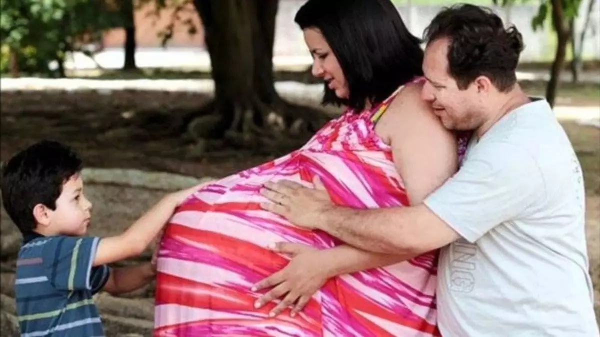

Grávida de Taubaté, ou falsa grávida de Taubaté, foi como ficou conhecido o caso da pedagoga Maria Verônica Aparecida César Santos após seu caso de gravidez de quadrigêmeas, que se originou em janeiro de 2012, ter se revelado falso. Moradora de Taubaté e dona de uma escola infantil, seu caso foi noticiado em diversos meios de comunicação de grande repercussão e foi considerado raro, sendo que uma de suas aparições mais famosas foi no Hoje em Dia, da RecordTV. No programa, Maria ganhou fraldas e um quarto mobiliado para as supostas filhas.
Chris Flores, apresentadora do programa supracitado, pediu para que o repórter Michael Keller investigasse o caso, que descobriu que a ultrassom apresentada por Maria era falsa. Desde então, Chris é considerada a pessoa que "desmascarou" a Grávida de Taubaté. Maria procurou um advogado para defendê-la, que acabou afirmando mais tarde que o caso era falso. Maria e seu marido, Kléber, foram processados pelo crime de estelionato, mas o processo foi suspenso e, anos mais tarde, extinto. A dona do ultrassom original também processou Maria por danos morais.
Desde então, a Grávida de Taubaté tornou-se um meme da Internet. No carnaval de 2012, a fantasia de falsa grávida foi a mais vendida da cidade, e o sufixo "de Taubaté" passou a representar casos falsos. Após o caso, Maria se isolou, procurou um psiquiatra e mudou seus hábitos e visual. Chris tentou reencontrá-la em 2021, mas não obteve sucesso.
Assim ela entrou para a história da mídia brasileira e conquistou um cantinho especial no coração de todos os que acompanharam toda a trama e o meme, inclusive do Edu guedes que fez até chorar.
**Não sei quem essas pessoas citadas são.
Chris Flores, na época apresentadora do Hoje em Dia, é creditada como a pessoa que acabou com a graça e desmascarou a Grávida de Taubaté. Ao The Noite com Danilo Gentili, contou que, antes de entrar no ar com Maria, disse para ela em seu camarim que não acreditava que ela estava grávida, mas Maria rejeitou apresentar qualquer tipo de prova.
Então, Chris pediu para que o repórter Michael Keller, que levaria Maria até Taubaté após o programa, "descobrisse" se ela estava grávida ou não. No mesmo dia, ele foi ao médico e descobriu que a ultrassonografia que Maria apresentava como sua foi copiada da Internet e editada.
